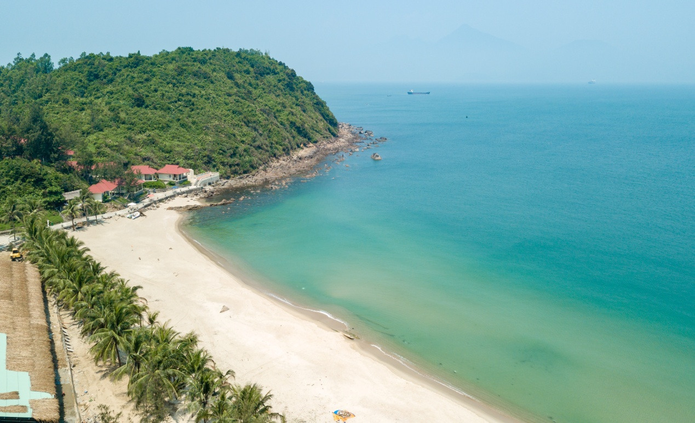
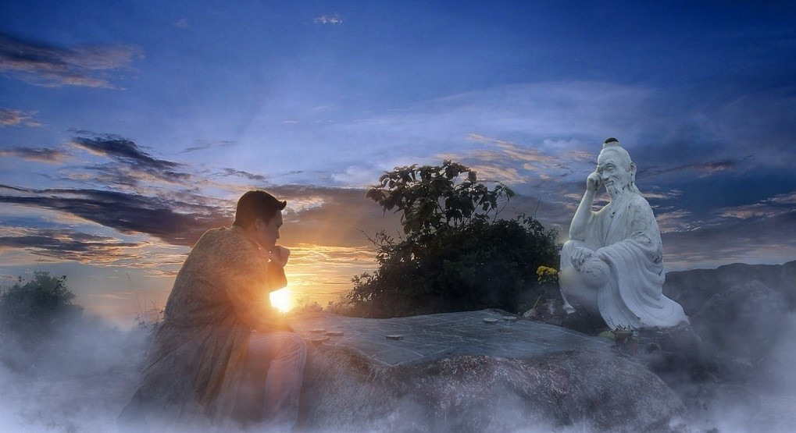
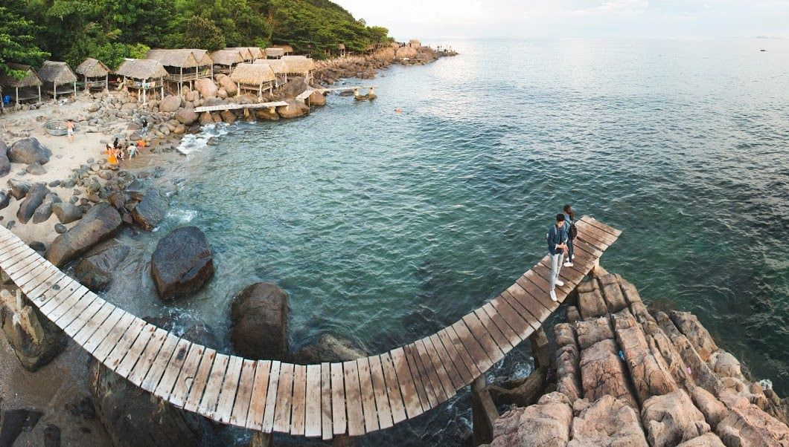
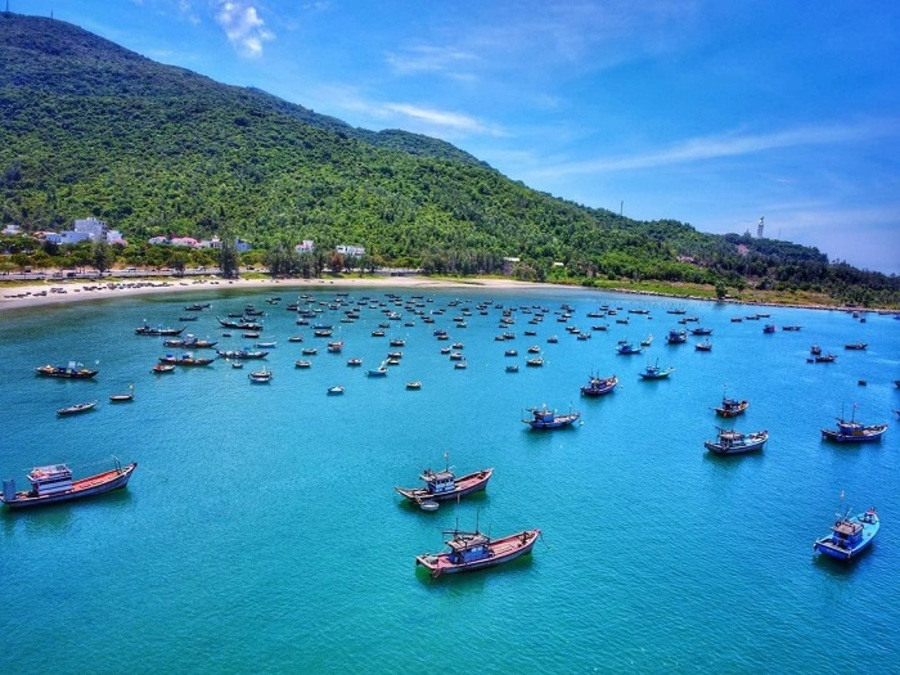
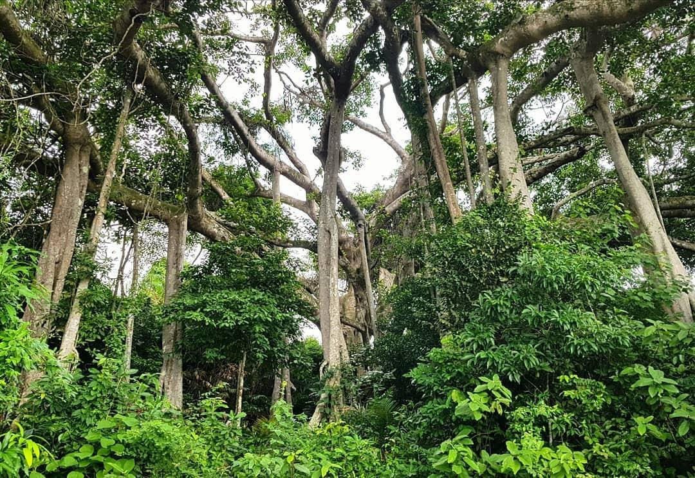
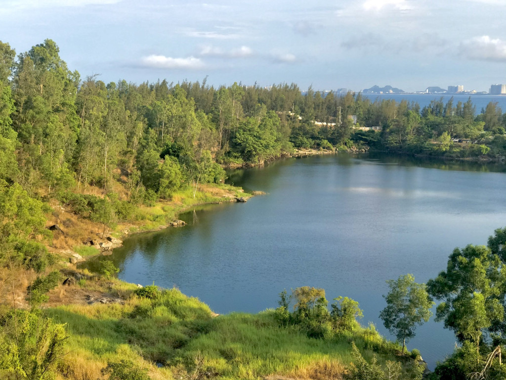
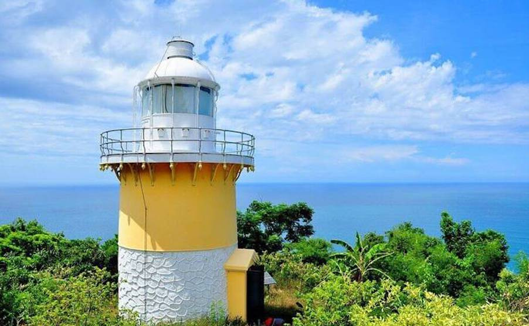
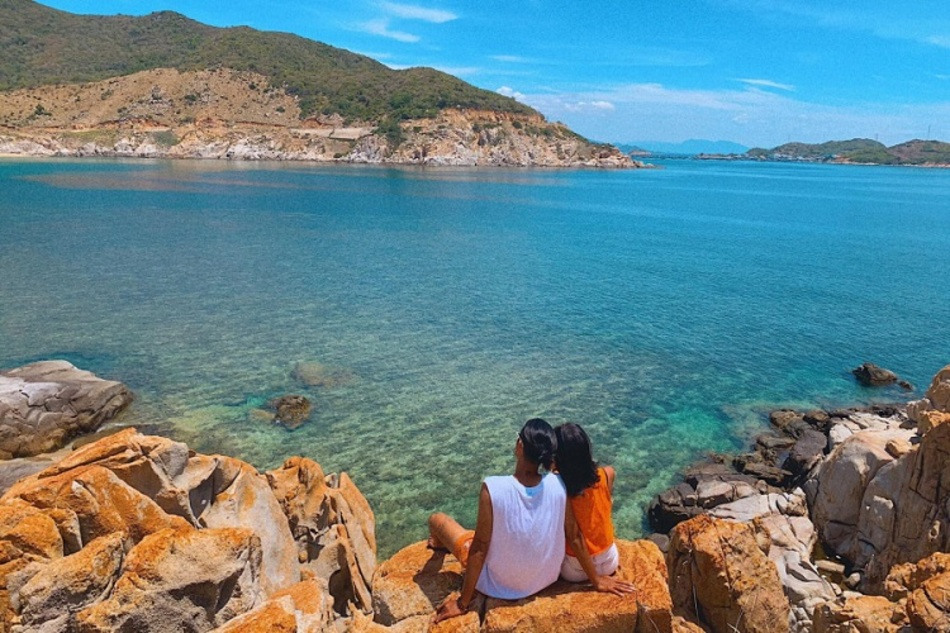
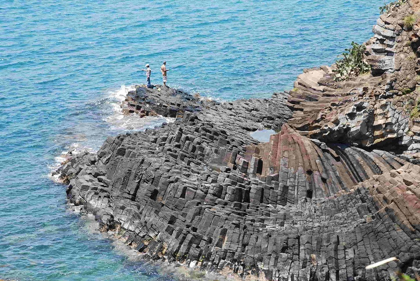
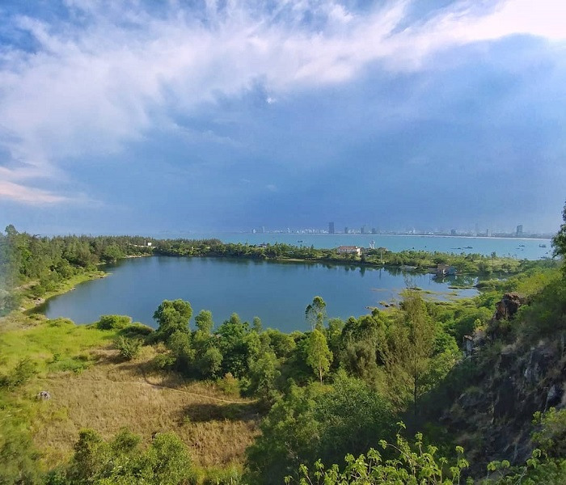

1. Giới thiệu về bán đảo Sơn Trà
Bán đảo Sơn Trà nằm ở thành phố Đà Nẵng, nổi bật với núi rừng xanh mát và những bãi biển đẹp. Không gian nơi đây có sự kết hợp giữa biển, rừng và các con đường uốn quanh sườn núi, tạo nên cảnh quan đặc trưng của thành phố ven biển miền Trung.
Đến với Sơn Trà, du khách có thể dành thời gian ngắm cảnh từ trên cao, tìm hiểu thiên nhiên hoặc ghé thăm những bãi biển yên tĩnh. Mỗi địa điểm mang một nét đẹp riêng, từ các bãi đá hoang sơ đến những góc nhìn rộng mở hướng về thành phố Đà Nẵng.
2. Những điểm tham quan nổi bật
1. Bãi Tiên Sa
Bãi Tiên Sa nằm giữa những sườn núi của bán đảo, có không gian tương đối yên tĩnh với bãi cát sáng màu và mặt biển xanh. Nhìn từ trên cao, đường bờ biển cong nhẹ tạo nên khung cảnh rất dễ nhận ra.
Đây là địa điểm thích hợp cho những ai muốn nghỉ ngơi bên bờ biển, ngắm cảnh và chụp ảnh. Khi đến tham quan, du khách có thể tận hưởng bầu không khí thoáng đãng, khác với nhịp sống đông đúc ở trung tâm thành phố.

2. Đỉnh Bàn Cờ
Đỉnh Bàn Cờ là một trong những điểm ngắm cảnh nổi tiếng trên bán đảo Sơn Trà. Đường lên đỉnh đi qua các đoạn núi quanh co, còn khu vực trên cao mở ra tầm nhìn rộng về phía biển và thành phố.
Điểm nhấn của nơi này là hình tượng ông tiên bên bàn cờ, gợi nhắc câu chuyện dân gian được nhiều người biết đến. Khi thời tiết quang đãng, cảnh núi, biển và những dãy nhà phía xa tạo nên một bức tranh rất ấn tượng.

3. Bãi đá Obama
Bãi đá Obama, còn được gọi là bãi Đá Đen, nổi bật bởi những tảng đá lớn nhỏ nằm sát mép nước. Khung cảnh ở đây mang vẻ tự nhiên, gần gũi, với màu xanh của biển xen giữa các khối đá nhiều hình dạng.
Du khách thường đến bãi đá để ngắm biển, nghỉ chân và ghi lại những bức ảnh ngoài trời. Khu vực có đá và bề mặt không bằng phẳng nên cần chú ý khi di chuyển, đặc biệt lúc đá ướt hoặc có sóng lớn.

4. Bãi Bụt
Bãi Bụt là một bãi biển được nhiều du khách lựa chọn khi khám phá Sơn Trà. Nơi đây có sự kết hợp giữa bãi cát, mặt nước và các dãy núi xanh ở phía sau, tạo cảm giác thư thái khi nhìn ra biển.
Vào những ngày thời tiết đẹp, du khách có thể dạo chơi, ngồi ngắm sóng hoặc chụp ảnh phong cảnh. Những khoảng trời rộng và đường chân trời trên biển là điểm đặc biệt khiến bãi Bụt hấp dẫn người yêu thiên nhiên.

5. Cây đa ngàn năm
Giữa khu rừng trên bán đảo Sơn Trà có một cây đa cổ thụ nổi tiếng với thân lớn, tán rộng và nhiều rễ phụ. Hình dáng đặc biệt của cây tạo nên một điểm dừng chân khác hẳn những địa điểm ngắm biển trên bán đảo.
Đến đây, du khách có thể quan sát vẻ đẹp của cây cổ thụ và cảm nhận không khí mát mẻ của rừng. Đây cũng là dịp để tìm hiểu thêm về môi trường tự nhiên, đồng thời ý thức hơn về việc giữ gìn cây xanh và cảnh quan.

6. Bãi cỏ cháy
Bãi cỏ cháy thu hút người tham quan bởi những khoảng cỏ khô mang sắc vàng nhẹ, đặc biệt đẹp khi có nắng chiếu qua. Không gian thoáng và các lớp cỏ đung đưa trong gió tạo cảm giác bình dị, khác với cảnh biển thường thấy ở Sơn Trà.
Nhiều người chọn ghé địa điểm này vào sáng sớm hoặc chiều muộn để chụp ảnh. Màu sắc của cỏ thay đổi theo mùa và thời tiết, vì vậy mỗi lần đến có thể mang lại một cảm nhận khác nhau.

7. Hải đăng Sơn Trà
Hải đăng Sơn Trà, còn được biết đến với tên hải đăng Tiên Sa, nằm trên một vị trí cao của bán đảo. Công trình có vẻ đẹp giản dị và gợi nhớ đến lịch sử hàng hải gắn liền với vùng biển Đà Nẵng.
Khu vực xung quanh hải đăng có cảnh núi rừng và biển trời rộng mở. Nếu tuyến đường và khu vực tham quan được phép tiếp cận, đây là nơi thú vị để quan sát thiên nhiên và lưu lại những bức hình về Sơn Trà.

8. Bãi Rạng
Bãi Rạng mang nét đẹp tự nhiên với những bãi đá nằm dọc bờ biển và mặt nước xanh trong vào ngày nắng đẹp. So với những bãi biển đông người, không gian ở đây thường được nhắc đến bởi cảm giác gần gũi với thiên nhiên.
Đến bãi Rạng, du khách có thể ngắm sóng, chụp ảnh và thư giãn bên biển. Trước khi tham gia các hoạt động dưới nước, nên xem tình hình thời tiết, sóng biển và chỉ chọn khu vực an toàn.

9. Ghềnh Bàng
Ghềnh Bàng là một khu vực bờ biển có nhiều phiến đá và các khối đá tự nhiên nằm xen kẽ nhau. Những mảng cây xanh ven bờ cùng mặt biển phía trước tạo nên không gian hoang sơ, phù hợp với người thích khám phá cảnh quan.
Điểm cuốn hút của Ghềnh Bàng nằm ở những góc nhìn rất khác nhau giữa đá, cây và nước biển. Tuy nhiên, đường đi và bề mặt đá có thể khó di chuyển nên du khách cần chuẩn bị giày phù hợp và thận trọng khi tham quan.

10. Hồ Xanh
Hồ Xanh là điểm dừng chân được yêu thích nhờ mặt nước phẳng lặng, phản chiếu màu trời và những hàng cây xung quanh. Khung cảnh nhẹ nhàng của hồ tạo nên một nét chấm phá khác biệt trong hành trình khám phá bán đảo Sơn Trà.
Không gian ven hồ phù hợp để đi dạo, ngắm cảnh và chụp ảnh, đặc biệt khi ánh sáng dịu vào buổi sáng hoặc cuối chiều. Du khách nên giữ vệ sinh và hạn chế tác động đến cảnh quan tự nhiên quanh khu vực.

3. Kinh nghiệm hữu ích khi du lịch bán đảo Sơn Trà
3.1. Đường đi bán đảo Sơn Trà
Bán đảo Sơn Trà cách khu vực trung tâm Đà Nẵng khoảng 10 km. Du khách có thể chọn tuyến đường thích hợp tùy theo điểm xuất phát và phương tiện di chuyển.
- Từ trung tâm Đà Nẵng: đi qua cầu sông Hàn, theo đường Phạm Văn Đồng rồi nối vào đường Hoàng Sa để tới bán đảo.
- Từ Hội An: có thể đi theo tuyến đường ven biển Trường Sa – Võ Nguyên Giáp – Hoàng Sa.
- Đường thủy: một số hoạt động tham quan có thể sử dụng tuyến sông Hàn hoặc đường biển; cần kiểm tra lịch trình của đơn vị tổ chức.
Khi đi vào các tuyến đường trên núi, hãy kiểm tra biển chỉ dẫn, quy định lưu thông và tình hình thời tiết trước khi khởi hành.
3.2. Nên đi Sơn Trà vào thời gian nào?
Khoảng tháng 3 đến tháng 9 thường thích hợp để ngắm cảnh, chụp ảnh và tham gia các hoạt động ngoài trời vì đây là giai đoạn tương đối ít mưa tại Đà Nẵng.
Từ tháng 10 đến tháng 2, trời dễ có mưa, mây mù và đường trơn hơn. Nếu dự định lên đỉnh núi hoặc tham quan bãi đá, nên kiểm tra dự báo thời tiết và cân nhắc điều kiện an toàn.

3.3. Một số lưu ý khi tham quan
- Chuẩn bị trang phục thoải mái, áo chống nắng, mũ, nước uống và kem chống nắng.
- Nếu đi xe máy, hãy kiểm tra phanh, lốp, nhiên liệu và chọn cung đường được phép lưu thông.
- Thận trọng tại những đoạn đường dốc, khúc cua, bãi đá và khu vực có sóng mạnh.
- Giữ gìn vệ sinh, không xả rác và không làm ảnh hưởng đến động vật hoang dã.